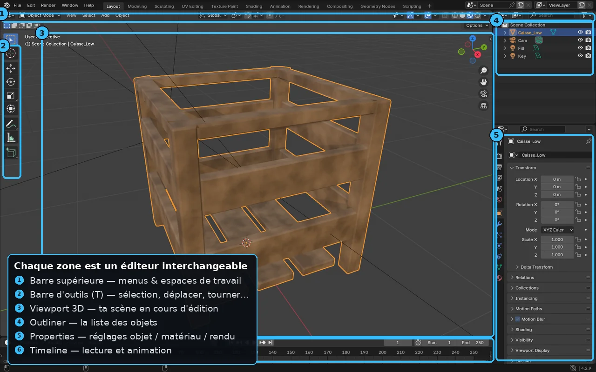

B2 — Interface & navigation
À la fin de cette leçon, tu sauras :
- Reconnaître les éditeurs de Blender et basculer entre les Workspaces.
- Naviguer dans le 3D Viewport (orbit, pan, zoom, vues numpad) avec aisance.
- Comprendre le rôle du curseur 3D, du point de pivot et de l'Outliner.
- Utiliser les raccourcis de transformation (G/R/S) et les contraintes d'axe.
Pourquoi c'est important
Blender a la réputation d'être déroutant : il fonctionne énormément au raccourci clavier et son interface se réorganise selon la tâche. Mais une fois la logique comprise — des éditeurs interchangeables, regroupés en Workspaces, pilotés par des raccourcis cohérents — on devient très rapide. Cette leçon t'évite les blocages classiques du débutant (« où est passé mon objet ? », « pourquoi ça tourne autour de ce point ? ») qui découragent tant de gens.
Théorie en profondeur
1. Éditeurs et Workspaces
L'écran de Blender est découpé en zones ; chaque zone affiche un éditeur (un type d'outil) qu'on peut changer via le menu en haut à gauche de la zone. Les éditeurs clés :
- 3D Viewport : la vue 3D où l'on modélise.
- Outliner (haut-droit) : l'arbre de tous les objets de la scène, leur hiérarchie et leur visibilité.
- Properties (bas-droit) : les propriétés par onglets (Render, Output, Scene, Object, Modifiers , Material, etc.).
- Timeline (bas) : la lecture et les keyframes (renvoi B10).
Les Workspace (onglets en haut : Layout, Modeling, Sculpting, UV Editing, Texture Paint, Shading, Animation…) sont des dispositions pré-réglées d'éditeurs pour une tâche. Changer de Workspace ne modifie pas ton modèle : cela réarrange l'écran. C'est l'équivalent de « changer d'établi » dans l'atelier.

2. Naviguer dans le 3D Viewport
La navigation repose sur la molette de la souris :
- Orbiter (tourner autour) : molette enfoncée + déplacement (ou Alt+clic gauche).
- Panoramique (translation) : Maj + molette enfoncée.
- Zoom : rouleau de la molette (ou Ctrl + molette enfoncée).
- Vues prédéfinies (pavé numérique) : 1 face, 3 côté, 7 dessus, 5 bascule perspective/orthographique, . (point) recentre sur la sélection.
Le widget Gizmo de navigation (les axes en haut à droite) et la molette de zoom font la même chose à la souris si tu n'as pas de pavé numérique (active alors Emulate Numpad dans les Preferences).
3. Curseur 3D et point de pivot
Deux notions propres à Blender qui déroutent au début :
- Le curseur 3D (le petit réticule rouge-blanc) est un point de référence mobile : les nouveaux objets y apparaissent, et il sert d'origine pour certaines opérations. On le replace à l'origine du monde avec Maj+C.
- Le point de pivot (menu en haut du viewport) détermine autour de quoi tournent et se mettent à l'échelle les objets : Median Point (par défaut), 3D Cursor, Individual Origins, Active Element. Beaucoup de « ça tourne bizarrement » viennent d'un pivot inattendu.
4. Transformer : G, R, S et les axes
Le cœur de l'efficacité de Blender : on déplace avec G (Grab), tourne avec R (Rotate), met à l'échelle avec S (Scale). On contraint à un axe en tapant ensuite X, Y ou Z, et on peut taper un nombre au clavier pour une valeur exacte (ex. G Z 2 = déplacer de 2 m vers le haut). Tab bascule entre Object Mode et Edit Mode (renvoi B3).
🔧 Démonstration pas à pas
- Dans la scène de départ, oriente la vue : molette enfoncée pour orbiter autour du cube, rouleau pour zoomer, 7 pour passer en vue de dessus.
- Sélectionne le cube (clic gauche). Appuie sur . du pavé numérique pour le recentrer (Frame Selected).
- Déplace-le précisément : G puis Z puis tape 1 et Entrée → il monte d'1 m.
- Change le point de pivot en 3D Cursor (menu en haut du viewport), tourne avec R Z : observe qu'il tourne maintenant autour du curseur, pas de son centre.
- Remets le curseur à l'origine (Maj+C), repasse le pivot sur Median Point.
- Explore les Workspaces : clique l'onglet Shading puis Layout — l'écran se réorganise, ton cube est intact.
⚠️ Pièges & erreurs courantes
🔧Exercice pratique
- Ajoute trois primitives () à des positions précises avec G+axe+valeur.
- Renomme-les dans l'Outliner et range-les dans une Collection (clic droit ▸ New Collection).
- Configure une disposition à deux Viewports (un de face, un en perspective) en divisant une zone (glisser depuis un coin).
- Tu navigues sans hésiter (orbit/pan/zoom + vues numpad).
- Tu places un objet à une coordonnée exacte au clavier.
- Tu sais expliquer la différence curseur 3D / point de pivot.
Vérifie ta compréhension
Clique sur la réponse que tu penses correcte : la bonne réponse et une explication s'affichent aussitôt.
Exercices
Navigue dans le viewport (orbite, pan, zoom) et bascule entre les Workspaces Layout et Shading.
Voir une piste
Clic-milieu = orbite, Shift+clic-milieu = pan, molette = zoom (ou le gizmo de navigation en haut à droite). Les onglets de Workspace en haut changent toute la disposition selon la tâche.
Bascule en mode Edit sur un cube et déplace un seul sommet, une arête, puis une face.
Voir une piste
Tab pour entrer en Edit, puis 1/2/3 pour le mode vertex/edge/face. Sélectionne un élément et utilise G pour le déplacer. C'est la base de toute la modélisation.
Personnalise un espace de travail (divise une zone, change un éditeur) et enregistre-le comme fichier de démarrage si tu le souhaites.
Voir une piste
Tire le coin d'une zone pour la diviser, change son type d'éditeur (menu en haut à gauche de la zone). File ▸ Defaults ▸ Save Startup File pour conserver ta disposition au prochain lancement.
- L'écran = des éditeurs interchangeables ; les Workspaces les réarrangent par tâche.
- Navigation : molette (orbit), Maj+molette (pan), rouleau (zoom), numpad pour les vues.
- Curseur 3D = où naissent les objets ; point de pivot = autour de quoi on tourne/scale.
- G/R/S + X/Y/Z + valeur = transformations précises ; Tab = Edit Mode.
Glossaire des termes introduits
Éditeur — type d'outil affiché dans une zone de l'écran Blender (Viewport, Outliner, Properties…).
Workspace — disposition pré-réglée d'éditeurs pour une tâche (Modeling, Shading…).
Curseur 3D — point de référence mobile où apparaissent les nouveaux objets.
Point de pivot — centre autour duquel s'effectuent rotations et mises à l'échelle.
Voir aussi le glossaire global.
Pour aller plus loin
- B3 — Modélisation (Edit Mode) : où l'on édite réellement la géométrie.
- U2 / E2 : les éditeurs des moteurs, pour comparer les logiques.